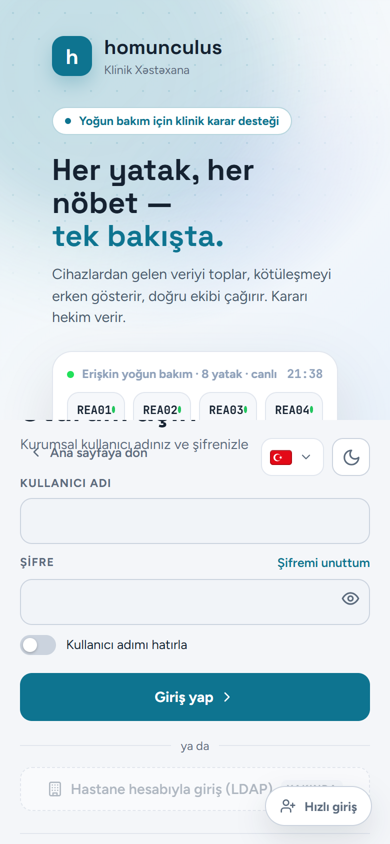

Bugün telefonda ne oluyor (ölçüldü): masaüstünün iki bölmeli giriş ekranı telefonda üst üste biniyor. "Oturum aç" başlığı canlı kartın arkasında kalıyor, "Ana sayfaya dön" açıklamanın üstüne biniyor, yatak kartları yarıda kesiliyor. Gördüğün kayma bu. Açık tema da telefonda çok düşük renkli: zemin, kart ve vurgu birbirine yakın. Seçimden bağımsız olarak bu üst üste binme düzelecek.